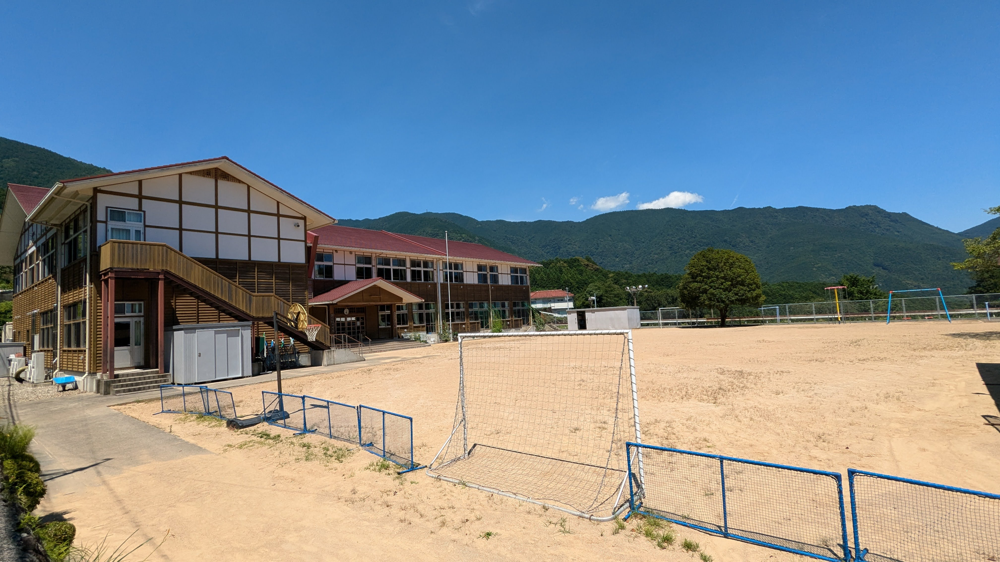

色川地区
繰り返しの毎日、せわしい都会の日常に気疲れしてしまった時は色川に癒されに行きましょう。美しい棚田や手つかずの自然はあなたの心を満たしてくれることでしょう。
詳しく見る
香川県
うどんだけじゃない香川の旅。瀬戸内海に面した美しい景観と、父母ヶ浜の幻想的なリフレクション。アートと自然、歴史が織りなす、心ほどける時間が待っています。
詳しく見る
有馬温泉
有馬温泉は日本三古湯のひとつに数えられる歴史ある温泉地です。金泉と銀泉の異なる湯を楽しめ、歴史ある街並みと豊かな自然が心と体を癒してくれます。
詳しく見る
小樽市
うつろう季節の中で、ふと立ち止まりたくなったら小樽へ。石畳の道、海風に揺れる運河、手のひらにおさまる硝子の温もり。懐かしさと新しさが交差するこの街で、静かに心がほどけていく。
詳しく見る

金沢市
雨音が似合う街並み、風情あふれる茶屋街、そっと心に灯る金箔のきらめき。伝統が日常に溶け込むこの場所で、静かに時の流れに身をゆだねる。
詳しく見る

虚空市
木の温かみを感じる。田舎の、山奥の、鮮やかさを感じる。これまでに見たことのない景色。現実ではないどこか、きっと夢の中に迷い込んでしまったのだろう。
詳しく見る